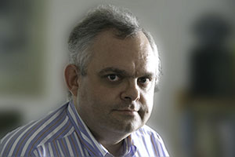

Dietmar Krause
- Dönhoffstraße 55B
- 51373 Leverkusen
- Tel.: 0172-5274493
- Im Jahr 1960 in Goch am Niederrhein geboren. Medizinstudium und Promotion, anschließend Facharztausbildung zum Internisten. Niedergelassen in Leverkusen seit 1995. Freischaffender Künstler seit 2007
Der Weg zur Malerei führte über die Fotografie und Ausbildungen bei Künstlern in Norderney und Leverkusen zu Arbeiten in Aquarelltechnik schließlich zu Acryl auf Leinwand und zur Zeichnung, unter anderem Kohle auf Papier, sowie zur Radierung und Aquatinta.
Galerievertretung:
- Pelster Kunsthandel, Kleine Budengasse 13, 50667 Köln
Ausstellungen:
- Leverkusener Kunstnacht 2007 und 2008 im Rahmen des Kreativkurses „malso“
- Leverkusener Kunstnacht 2009, 2010 und 2011 im Rahmen der Künstlergruppe 5-09
- Jurierten Jahresausstellung der Stadt Leichlingen 2009 und 2011
- Bürgerhaus Leichlingen Nov. 2009
- Leichlinger Straßengalerie 2010 und 2011, 2012 und 2013
- Firma Hastenrath in Solingen 2010
- Café Eigel in Köln September bis Oktober 2010
- MVZ Bethanien in Langenfeld 2011
- CDU Fraktion im Rat der Stadt Köln, Historisches Rathaus Februar 2012
- Krankenhaus Bethanien, Solingen 2013